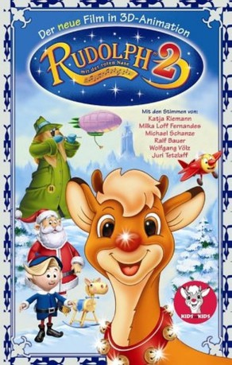

#10638 Rudolph mit der roten Nase 2 - Rudolph und der Spielzeugdieb
Alternativ: Rudolph the Red-Nosed Reindeer & the Island of Misfit Toys (Englischer Titel)
 
 IMDB-Wertung: 5.6 / 10
IMDB-Wertung: 5.6 / 10  Metascore: 0
Metascore: 0 
Rudolphs neue Geschichte ist spannend, denn alles Spielzeug wurde gestohlen. Ein geheimnisvoller Spielzeugdieb hat zugeschlagen - natürlich ein Fall für Rudolph und sein Team. Wieder einmal muss die leuchtend rote Nase eingesetzt werden. Auf einer geheimnisvollen Insel müssen Rudolph und seine Freunde viele aufregende Abenteuer bestehen. Die Frage ist: Wird es Rudolph auch dieses Mal gelingen, Weihnachten zu retten? Und kann er auf seiner atemberaubenden Verfolgungsjagd die wahre Identität des Spielzeugdiebs feststellen?
Jahr: 2001
Dauer: 72 Minuten
FSK: 0
Land: USA Studio: Goodtimes EntertainmentTonspuren:
Untertitel:
Auflösung: SD (698x402) Größe: 849 MB
Genre: Komödie, Abenteuer, Fantasy, Animation/Trick, Familie, Musical, Weihnachten
Regisseur: William R. Kowalchuk Jr.
Drehbuch: Robert May, Johnny Marks, Kevin Hopps, Michael Aschner, Lee Tockar
Soundtrack: Diana B, Bruce Roberts
Darsteller:
 Richard Dreyfuss als Scoop the Snowman
Richard Dreyfuss als Scoop the Snowman Jamie Lee Curtis als Queen Camilla
Jamie Lee Curtis als Queen Camilla Rick Moranis als Toy Taker / Mr. Cuddles the Teddy Bear
Rick Moranis als Toy Taker / Mr. Cuddles the Teddy Bear Scott McNeil als Hermey / Yukon Cornelius / Boomerang / Coach Comet / Duck
Scott McNeil als Hermey / Yukon Cornelius / Boomerang / Coach Comet / Duck Garry Chalk als Santa Claus / Bumble
Garry Chalk als Santa Claus / Bumble- Elizabeth Carol Savenkoff als Clarice
 Peter Kelamis als Elf Foreman
Peter Kelamis als Elf Foreman- Brent Miller als Hank
 Lee Tockar als Charlie in the Box / Windup Mouse / Gingerbread Guard
Lee Tockar als Charlie in the Box / Windup Mouse / Gingerbread Guard Terry Klassen als Telephone / Dizzy Top
Terry Klassen als Telephone / Dizzy Top- Alec Willows als Kite
- Don Brown als Toy Taker
- Shawn Ora Engemann als Queen Camilla / Clarice (singing voice) (uncredited)
 Kathleen Barr als Rudolph / Mrs. Claus / Dolly / Peggy the Pig / Female Cardinal / Tooth Fairy / Rocking Horse / Adina
Kathleen Barr als Rudolph / Mrs. Claus / Dolly / Peggy the Pig / Female Cardinal / Tooth Fairy / Rocking Horse / Adina- Colin Murdock als King Moonracer / Reindeer #1
- Bruce Roberts als Toy Taker / Mr. Cuddles / Kite / Toy Soldiers / Villager (singing voice) (uncredited)
Datei: X:\Kinder Collections\Rudolph mit der roten Nase\Rudolph mit der roten Nase 2 - Rudolph und der Spielzeugdieb (2001, FSK0, 698x402).mkv seit 08.02.2019
Festplatte: Kinder-Filme+Trick
 Alle Filme aus Gruppe 'Kinder Collections\Rudolph mit der roten Nase'
Alle Filme aus Gruppe 'Kinder Collections\Rudolph mit der roten Nase'